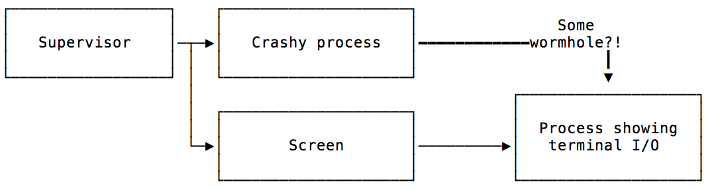

Let’s say you have a program that needs to do I/O on a terminal (it draws really nice ascii graphics!), but it usually runs unsupervised. If the program crashes, you want a think like s6 or systemd to restart that program. The problem here is the terminal I/O: Since most process supervision tools usually redirect standard I/O to a log file, the wonderful terminal graphics just end up being non-ascii chunder that confuses you if you try to tail the log file.
My usual approach would have been to start the program under screen
(screen -D -m if you’re interested), but that way you lose part of
your process supervision tools’ capabilities: There’s a process in
between the supervisor and your actual program, so you can’t send
e.g. SIGKILL with your standard tools (e.g., svc -k
/svc/your-tool) to force it to exit.
However, this approach is generally what I want – I’d like the crashy program to run under a pseudo terminal like screen to have its I/O be available elsewhere, and also make the pseudo-terminal’ed process be a direct child of the process supervisor. One feels reminded of a cake that is had & eaten.
I searched up and down, and besides
some djb announcement in the
early 90s of a tool that might be made to do what I want (which
doesn’t compile under modern OSes anymore, and is also fantastically
underdocumented), I didn’t find anything. screen -Dm was my best
bet, but ugh! Time to see if we can do something hilarious with UNIX
semantics. Spoiler: We totally can.
First: Pseudo Terminals - how do they work?
Pseudo Terminals (aka pseudo TTYs or PTYs) are a fun and kinda horrible facility in UNIX: A process can allocate a PTY, and gets a controlling and a client end1. If you’re writing a terminal-emulation program like xterm, it would keep the controlling end - this is what allows it to read what’s being written to the client end and send text to the client, as if that text appeared in a real terminal. Your terminal emulator would pass the client end to a shell session and then read what the shell sends to stdout or stderr.2
The one thing you really need to know about PTYs here is that the
controlling and the client end both come as UNIX file
descriptors. They’re a number attached to a process, much like file
handles, sockets or other silly things you can use with
read/write.
So, my thinking goes: Let me write a little UNIX tool that sets up a
new PTY, then sends the controlling end to another process, then
retains the client end for itself and calls exec to start my crashy
program. Calling exec doesn’t adjust the process hierarchy, and
would be exactly what other tools do to start programs under process
supervision.

If only there was a way to send that controlling end elsewhere…
But… uh, can you send the controlling end of a PTY to another process? Turns out you can!
UNIX domain sockets3 are what they call a socket facility (“Internet”
is another socket facility). These are file-like objects that behave
almost exactly like real network sockets to localhost - they have two
ends, you can send and receive data via sendmsg and recvmsg, but
they have a few more functions! One is that one end can query the
other end’s user ID and other authentication data.
Another cool function of UNIX domain sockets is that you can send structured data like file descriptors over them. Remember file descriptors? Both ends of a PTY are file descriptors!
Yay! Just send the controlling end of the PTY through a UNIX domain socket to a process that’s running under a terminal emulator like screen! We can do this!
Oh right: Prior art & introducing deptyr!
My amazing colleague Nelson had already written a tool called
reptyr, which did the things I
wanted to do, just almost in inverse: It uses ptrace to attach to a
process that’s running under another terminal and force it to set up a
new PTY, it then makes the process send the controlling end to reptyr
through a UNIX domain socket so it can proxy your input and the
process’s output.
Since reptyr’s code base is geared towards doing just that re-PTY-ing of existing programs (it’s really not my pun), I decided to rearrange it in a new tool for starting processes headlessly, called deptyr.
Deptyr has two modes of operation: One is to act as the “head”: It’s the thing that receives the controlling end of a PTY and acts as a proxy for your program’s output & any user input.
The other mode is the one that runs under process supervision - it sets up a PTY, connects to the “head” deptyr, and then execs your program with stdin/stdout redirected.
Once I’ve got the original thing thing I wanted to work, I’ll post an update with the config I used to actually run it under supervision. Initial experiments point to yes, but we’ll see (-:
- the standard terminology for the controlling and client end is is the “master” and “slave” ends. I find the standard terms extremely distasteful; in addition to extreme lack of taste, they don’t even correctly convey what’s going on, so controlling/client ends it is. ↩
- This is what tools like screen and xterm do! It’s pretty interesting to learn about this in detail – it’s pretty easy to run into a situation where you want to control a tool like a terminal emulator would. Sadly, I don’t know a lot of literature on PTYs. Send me your favorites! ↩
- Beej has a pretty good intro to programming UNIX domain sockets! ↩